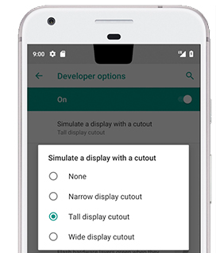
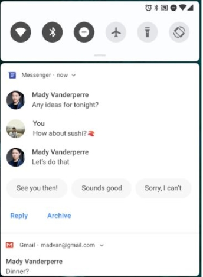
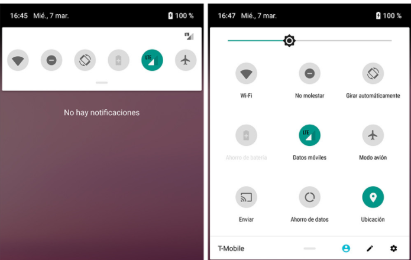
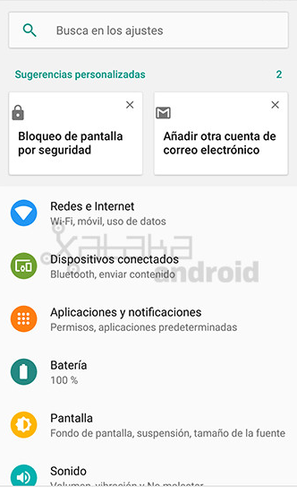
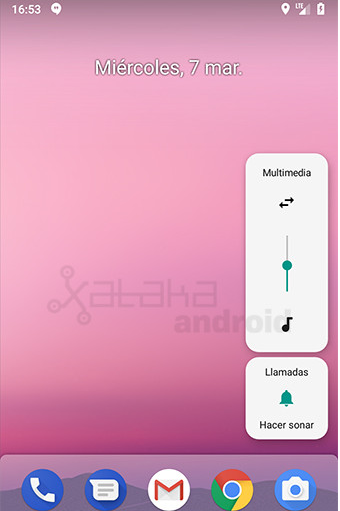
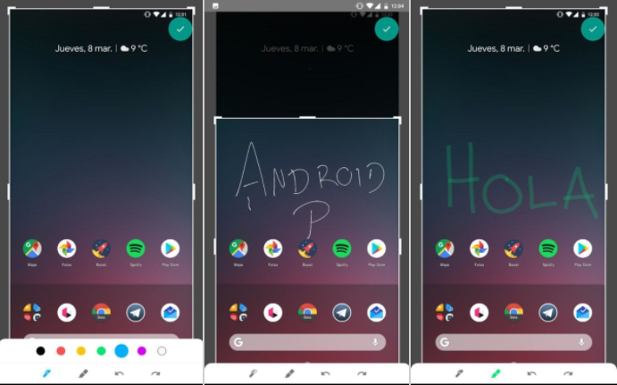

Mejor tarde que nunca, hace unas semanas Google nos sorprendió a todos publicando la primera preview para desarrolladores de la nueva version del sistema operativo Andriod: Android P.
Aún no sabemos lo que significará la letra P, imaginamos se anunciará cuando sea publicado oficialmente o en alguna filtración. Lo que si se ha podido saber es que esta versión es muy colorida. Repasemos las novedades de esta primera preview.
Pantallas con "notch"
Desde que salió el Iphone X, numerosas compañías chinas han colocado en sus dispositivos esta caracteristica que Apple trajo, el "Noch" o muesca, por ello, Google ha decidido que se tenga la opcion nativa para que la interfaz se adapte a esta característica.
Notificaciones de mensajería mejoradas
Ahora la barra de notificaciones mostrará los últimos mensajes de la conversación, así las imágenes completas y respuestas inteligentes para que no tengamos que escribir para responder.
Rediseño de ajustes rápidos
La barra de ajustes rápido ha sido rediseñada mostrando ahora los controles bajo un diseño circular, mostrando con color verde los controles activados. Además, ahora para ver todos los ajustes rápidos tan sólo habrá que hacer un desplazamiento vertical en vez de uno horizontal.
Ajustes coloridos
Ahora los iconos referentes a cada configuración en los ajustes tienen color.
Nueva interfaz del Control de Volumen
Ahora el panel de volumen está de manera vertical, al lado de la botonera y al acceder a él por default nos aparecerá el indicador de volumen multimedia y debajo estará el acceso a los demas apartados.
“Markup”, el editor de capturas de pantalla incorporado
Cuando realicemos una captura de pantalla con el acceso que ahora se incluye en la pantalla de apagado del terminal podremos editar dicha captura con Markup el editor de capturas de pantalla nativo de Andoid P.
Posicionamiento en interiores mejorado
Gracias al protocolo IEE 802.11mc de Wi-Fi, también conocido como Wi-Fi Round-Trip-Time, tu móvil será capaz de medir la distancia existente hasta el punto de acceso inalámbrico más cercano al que estás conectado.
De este modo, el dispositivo será capaz de determinar la distancia con un margen de error de uno o dos metros, habilitando así la navegación en interiores o la identificación de espacios para llevar a cabo acciones específicas en lugares concretos.
Optimización para Kotlin
Ahora los desarrolladores no solo pueden realizar aplicaciones con Java, desde el año pasado Kotlin también es lenguaje oficial para desarrollar aplicaciones Android, por ellos en Android P Google informa que han optimizado el rendimiento del código Kotlin en el compilador de Android.
Estas han sido algunas de las principales novedades que se han anunciado y se han podido apreciar en la primera vista previa a la nueva versión de Android: Android P.